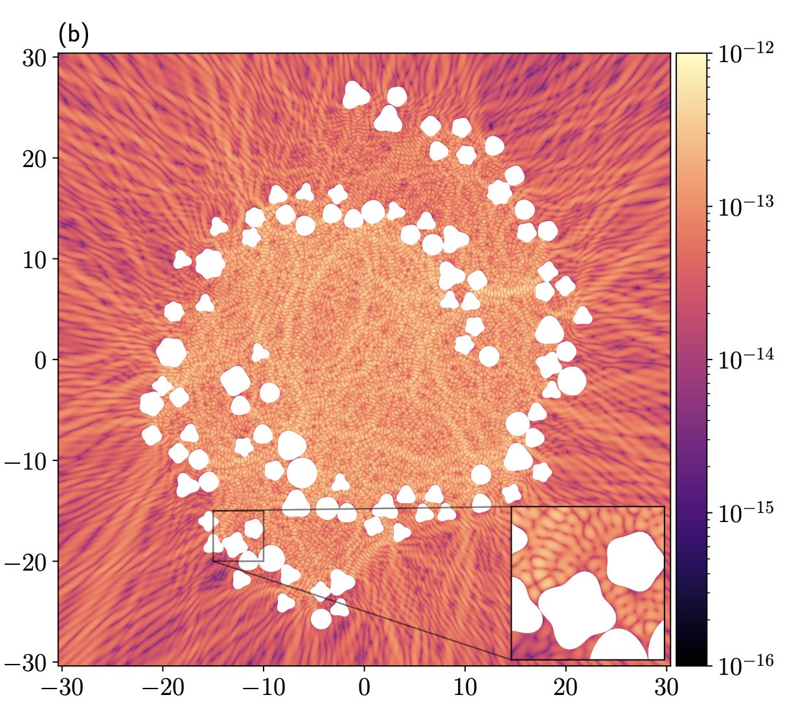

Aster Rotation
Asters centrate and generate rotational motion when confined to cylinders. This rotation is steady in small cylinders, oscillatory in medium sized cylinders, and ceases in large cylinders. We explain the appearance of switching using a mix of numerical and analytical models, and predict that switching transitions to steady rotation when density is increased, a prediction verified both in silico and in vitro.
Joint work with Sami Bashar, Gokberk Kabacaoglu, John Oakey, Taylor Sulerud, Mike Shelley, and Jay Gatlin.
Closures for active fluid models
Kinetic theories have been successful in modelling the behavior of active nematic and polar fluids, but are high-dimensional, requiring both space and orientational degrees of freedom to be discretized. Coarse-grained models that integrate out the orientational degrees of freedom are cheaper, but necessitate closure assumptions. We have derived a closure model for polar fluids that is analogous to the Bingham closure for nematic fluids, preserving its best analytical qualities, and derived numerical methods for both the nematic and polar Bingham closures that are fast, stable, and accurate, even near alligned states.
Joint work with Scott Weady and Mike Shelley.
Hyperuniformity of rotating ensembles
Ensembles of particles rotating in a two-dimensional fluid can exhibit chaotic dynamics yet develop signatures of hidden order. Initially random distributions of such rotors spontaneously self assemble into distinct arrangements with long-wavelength fluctuations isotropically suppressed --- a hallmark of a disordered hyperuniform material.
Joint work with Naomi Oppenheimer, Matan Yah Ben Zion, and Mike Shelley.
Quadrature by Fundamental Solutions
The evaluation of layer potentials at locations near to their source curves is the cause of a great deal of difficulty, especially in applying boundary integral methods to inhomogeneous problems. I've developed a spectrally accurate and kernel-independent way to evaluate layer potentials from smooth, moderately sized source curves to many nearby targets.
Joint work with Alex Barnett.

Spectral Embedded Boundary Schemes
Embedded boundary schemes enable the solution of PDE on general domains using fast, robust, regular grid solvers. Historically, these have been low order and/or plagued by instability and ill-conditioning. I have developed a novel method which uses Function Intension, or the smooth truncation of function values, combined with techniques from boundary integral methods, to generate solvers that are stable, spectrally accurate, and fast.
Joint work with Alex Barnett and Dan Fortunato.
Swirling Flows in Drosophila Oocytes
Cytoplasmic streaming during oocyte development in the fruit fly transitions from a spatially disordered cytoskeleton supporting flows with only short-ranged correlations to an ordered state with a cell-spanning vortical flow. We study a discrete-filament model and a coarse-grained continuum theory for motors moving on a deformable cytoskeleton, both of which exhibit a swirling instability to spontaneous large-scale rotational motion.
Joint work with Gabriele de Canio, Ray Goldstein, Eric Lauga, and Mike Shelley.
Understanding Dense Fiber Beds
Fiber bed behavior changes quantitatively and qualitatively with density. I developed a coarse-grained model where fiber density is a parameter, enabling analytical methods in simple geometries. This has shed light on important phenomenon, including swirling flows in the Drosophila Melanogaster ooocyte and rotation in confined asters.
Joint work with Mike Shelley.
High-order Immersed Boundary methods
Immersed Boundary methods are applicable to a wide range of problems but suffer from low-order accuracy and the inability to impose Neumann boundary conditions. We developed a high-order version of the IB method that allows a wider range of physical boundary conditions to be imposed, and have used this method to study complex fluid flows and dissolution problems.
Joint work with Mac Huang, Robert Guy, and Becca Thomases.